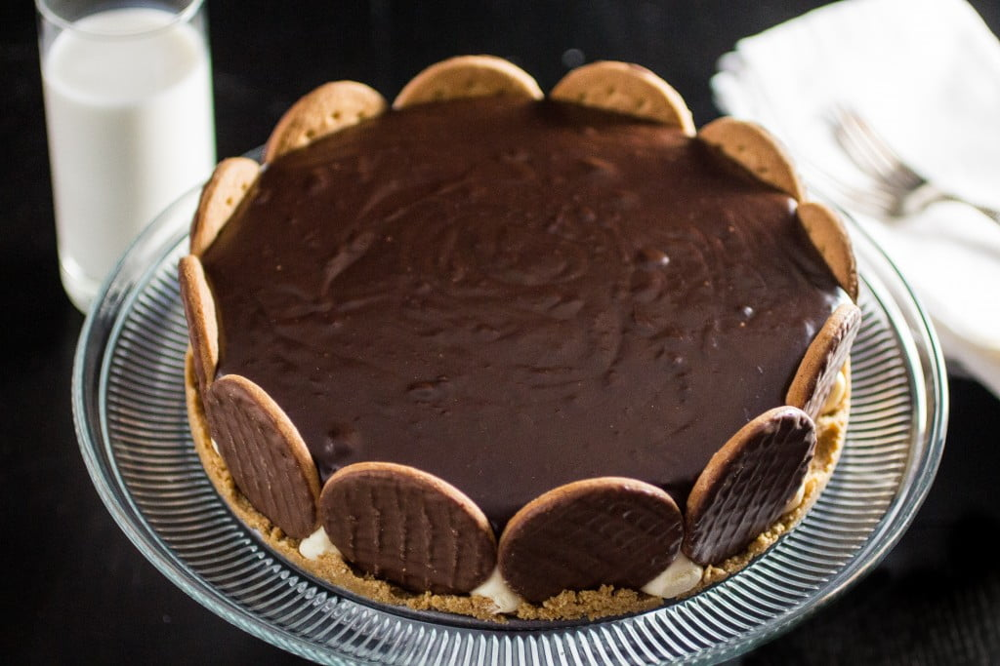

Back to index
Brazillian Dutch Pie

Description
Are you confused by the title? I know it's confusing,
this recipe was created in 1991 by the brazillia chef Sílvya Leite.
She named it Torta Holandesa, which is the portuguese
translation to Dutch Pie. She decided on that name after the
good times she had when travelling in Europe.
Ingredients
For the crust
- 30 squares Honey Flavored Graham Crackers
- 1 1/2 sticks of butter, softened
- 12 chocolate covered digestive cookies
For the cream filling
- 3 egg yolks
- 1 (14 oz) can sweet condensed milk
- 1 cup whole milk
- 1 (1/4oz) package unflavored gelatin (1 1/2 tsp)
- 1/2 cup cold water
- 1 1/2 cups heavy cream
For the chocolate ganache
- 1 (12oz) bag of semi sweet chocolate chips
- 1 cup heavy cream
Steps
To make the crust
- Pulse the graham crackers in a food processor until finely crumbled.
- Transfer them to a large bowl and add the softened butter.
Using your hands, mix the crumbs and the butter until a mass
resembling wet sand forms.
- Press the mixture into a 9" Springform pan (with removable
bottom), previously greased with nonstick spray.
- Line the digestive cookies around the edges of the pan,
gently pressing them against the graham cracker crust.
- Cover and bring to the fridge for at least one hour.
To make the cream filling
- Add the egg yolks (strained, if possible), the sweet condensed
milk and the milk to a sauce pan and bring to a boil over
medium low heat. Cook for about 10 minutes, stirring
constantly, until you obtain a thick cream.
- Add the gelatin package and the cold water to a microwave
safe bowl and bring it to the microwave, 5 seconds at a time,
until dissolved.
- Add the dissolved gelatin to the cream mixture and stir
until combined. Remove from heat and let it cool.
- In the meantime, whip the heavy cream with the aid of a
hand mixer, until firm peaks form.
- When the cream mixture is cool, fold the whipped cream in
with a spatula.
- Pour the mixture in the Springform pan, smoothing the surface
with a spatula.
- Cover with plastic and bring to the fridge for at least 3
hours, or overnight.
To make the chocolate ganache
- In a saucepan, heat the heavy cream, over medium heat, for
about 5 minutes or until it begins to boil.
- Combine the hot heavy cream and the chocolate chips in a
bowl and stir until the chocolate has melted.
- Pour the chocolate ganache on the cream pie.
- Cover with plastic and bring to the fridge for at least one
hour.
- Your pie is now ready to be served!